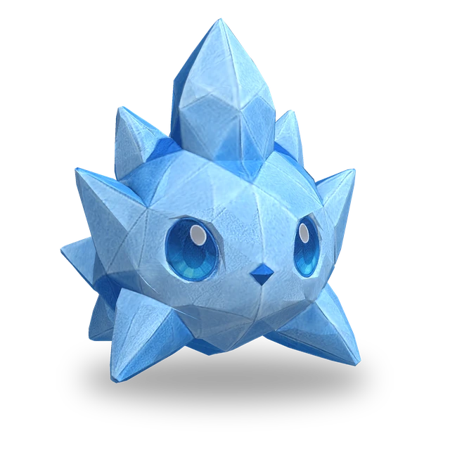

Aktywna
Kryształowy wybuch
Zadaje obecnemu celowi (zasięg: 1 pole) obrażenia magiczne równe 1230% Mocy magicznej. Innym wrogom wokół celu (promień: 1 pole) zadaje obrażenia magiczne równe 615% Mocy magicznej.
 3D
3D
| Lv. | Zdrowie | Atak | Moc magiczna |
|---|---|---|---|
| 1 | 440 | 16 | 16 |
| 2 | 506 | 18 | 18 |
| 3 | 582 | 21 | 21 |
| 4 | 669 | 24 | 24 |
| 5 | 770 | 28 | 28 |
| 6 | 885 | 32 | 32 |
| 7 | 1018 | 37 | 37 |
| 8 | 1170 | 43 | 43 |
| 9 | 1346 | 49 | 49 |
| 10 | 1548 | 56 | 56 |
| 11 | 1780 | 65 | 65 |
Zdrowie, Atak i Moc magiczna rosną o 15% z każdym poziomem (do Lv.11).
No.011
Zadaje obrażenia magiczne obecnemu celowi i wrogom wokół niego oraz nakłada na wrogów w swoim pobliżu Szron, który zmniejsza ich Szybkość ataku.
Ewoluuje w: Polarrock Wkrótce
Aktywna
Zadaje obecnemu celowi (zasięg: 1 pole) obrażenia magiczne równe 1230% Mocy magicznej. Innym wrogom wokół celu (promień: 1 pole) zadaje obrażenia magiczne równe 615% Mocy magicznej.
Pasywna
Nakłada na wrogów wokół siebie (promień: 1 pole) Szron, który zmniejsza ich Szybkość ataku o 15%. Szron utrzymuje się tylko, dopóki wróg pozostaje w tym promieniu. Efekty kilku umiejętności „Fala chłodu” nie kumulują się.